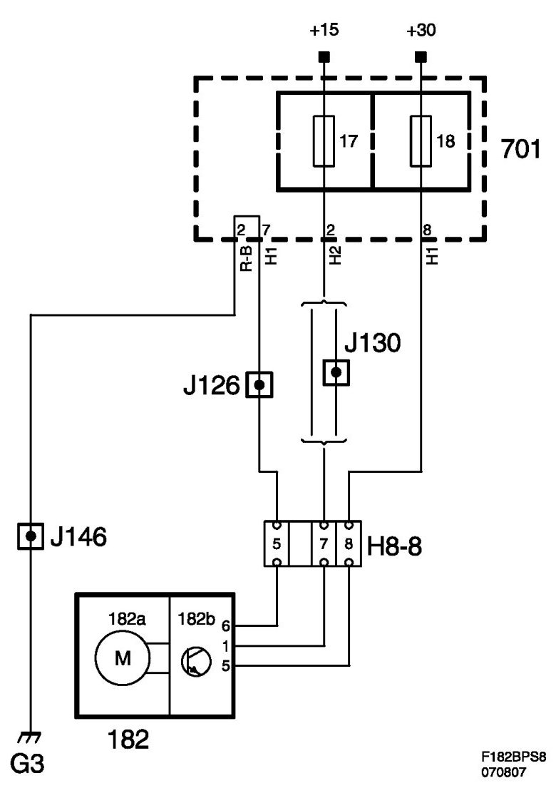
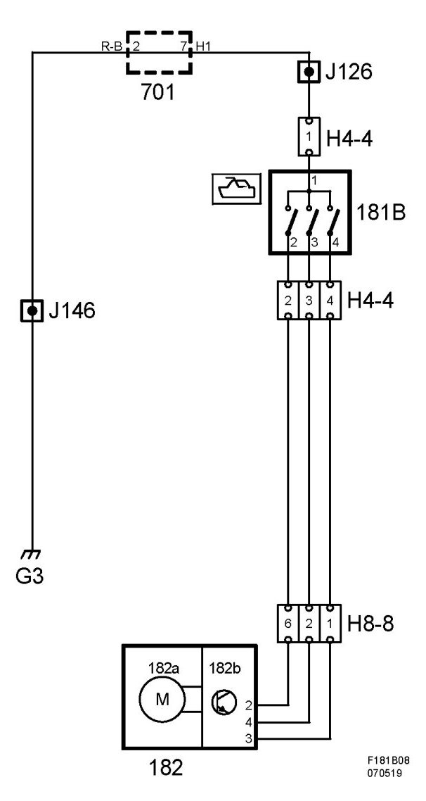

Sunroof Module Without Pinch Protection (182)
Sunroof Module Without Pinch Protection (182)
Location
Sunroof module (182).
Main task
Handles the opening and closing of the sunroof.
Type
Combined with motor
Connect
The motor is fed with +30 on pin 5 and +15 on pin 7, and grounded on pin 6 to G3 via the REC. Control signals on pins 2, 3 and 4.
Wiring diagram, motor power supply.

Wiring diagram, switch.
